
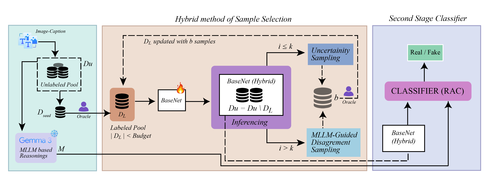
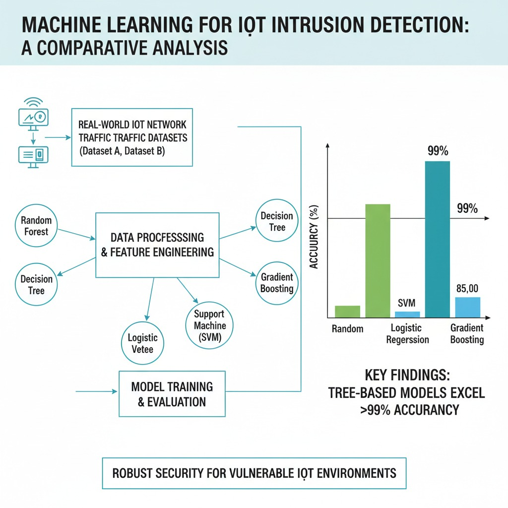

|
I'm currently doing my Master's in Computer Science at University of Bonn, where I'm diving deep into AI Safety thinking/will be thinking about robustness of Vision-Language Models and World Models, especially for Robotics applications (hopefully). Alongside, I work as a Research Assistant at the HCDS and LT groups at University of Hamburg, led by Prof. Chris Biemann. Broadly, I'm interested in multimodal systems, visual reasoning, and making models more robust. Some things I've worked on:
Before this, I was a Research Associate at IACV Lab, IISc Bangalore with Prof. Soma Biswas. I also did a research internship at the LT Group, Uni Hamburg with Chris Biemann and Jan Strich, and was a MITACS Globalink Research Intern at Dalhousie University. I did my B.E. in Information Technology at Panjab University. Research Interests: AI Safety & Robustness | Vision-Language Models | World Models for Robotics | Multimodal Reasoning | Interpretability of LLMs Hobbies: Outside of research, I enjoy traveling, reading, writing blogs, minimalist living, and tinkering with small experiments. I'm always happy to connect for a discussion or collaboration! |
Experience & Education


News & Highlights
- Apr 2026 Position Started as Research Assistant at HCDS & LT Group, University of Hamburg.
- Apr 2026 Education Started M.Sc. in Computer Science at University of Bonn, focusing on AI Safety & Robustness. 🎓
- Mar 2026 Paper Our paper HybridNet: Efficient Multimodal Fake News Detection is accepted to PP-MisDet@CVPR 2026! 🎉
- Feb 2026 Paper Our paper M4-RAG: A Massive-Scale Multilingual Multi-Cultural Multimodal RAG is accepted at CVPR 2026! 🎉
- Nov 2025 Paper Our paper Lost in Translation and Noise: A Deep Dive into Failure-Mode of VLLMs on Real-World Tables is accepted at NeurIPS Workshop on AI for Tabular Data. (Oral 🎉)
- Aug 2025 Paper Our paper MTabVQA: Evaluating Multi-Tabular Reasoning of Language Models in Visual Space is accepted at EMNLP 2025 (Findings).
- Aug 2025 Position Started working as Research Associate at IACV Lab, IISc Bangalore.
- May 2025 Paper Our new preprint, MTabVQA: Evaluating Multi-Tabular Reasoning of Language Models in Visual Space, is now available on ArXiv.
- Jan 2025 Intern Started a research internship at Language Technology Group, University of Hamburg, Germany.
- Oct 2024 Position Started working as undergraduate researcher at SMART Lab, Dalhousie University.
- Jul 2024 Intern Selected for Mitacs Globalink Research Internship at Dalhousie University, Nova Scotia, Canada.
- Nov 2023 Paper Our work Comparative Analysis of State-of-the-Art Attack Detection Models was accepted at 14th International Conference on Computing Communication and Networking Technologies (ICCCNT).
- Jun 2023 Intern Started a Machine Learning Research Intern at Virtual Labs, IIT Roorkee.
- Mar 2022 Position Started working as Project Intern at Design & Innovation Centre, Panjab University.
Research
 |
M4-RAG: A Massive-Scale Multilingual Multi-Cultural Multimodal RAG David Anugraha, Patrick Amadeus Irawan, Anshul Singh, En-Shiun Annie Lee, Genta Indra Winata IEEE/CVF Conference on Computer Vision and Pattern Recognition (CVPR), 2026 Paper We introduce M4-RAG, a massive-scale benchmark covering 42 languages and 56 dialects with over 80,000 culturally diverse image-question pairs to evaluate retrieval-augmented VQA. Our systematic evaluation reveals that while RAG consistently benefits smaller Vision-Language Models (VLMs), it fails to scale to larger models and often degrades their performance, exposing a critical mismatch between model size and current retrieval effectiveness. |
 |
HybridNet:
Efficient Multimodal Fake News Detection Shreyas Kumar Tah, Anshul Singh, Prajeet Katari, et al. PP-MisDet@CVPR, 2026 We propose HybridNet, a data-efficient framework that leverages hybrid active learning to select the most informative samples, drastically reducing labeling cost. We also propose a lightweight Reasoning-Aware Classifier (RAC) for challenging cases, which combines Vision–Language Model (VLM) features with reasoning from a Multimodal Large Language Model (MLLM) to further improve detection performance and provide human- interpretable explanations. |
|
MTabVQA: Evaluating Multi-Tabular
Reasoning of Language
Models in Visual Space Anshul Singh, Chris Biemann, Jan Strich Empirical Methods of Natural Language Processing (EMNLP), 2025 Findings Paper / Dataset / Poster In this work, we address a critical gap in Vision-Language Model (VLM) evaluation by introducing MTabVQA, a novel benchmark for multi-tabular visual question answering. Our benchmark comprises 3,745 complex question-answer pairs that require multi-hop reasoning across several visually rendered table images, simulating real-world documents. We benchmark state-of-the-art VLMs, revealing significant limitations in their ability to reason over complex visual data. To address this, we release MTabVQA-Instruct, a large-scale instruction-tuning dataset. Our experiments demonstrate that fine-tuning with our dataset substantially improves VLM performance, bridging the gap between existing benchmarks that rely on single or non-visual tables. |
|
 |
Comparative Analysis of
State-of-the-Art Attack Detection Models Priyanka Kumari, Veenu Mangat, and Anshul Singh 14th International Conference on Computing Communication and Networking Technologies (ICCCNT), 2023 Paper In this work, we address the growing security challenges in IoT networks by conducting a comprehensive comparative analysis of machine learning classifiers for intrusion detection. We evaluated five distinct models on two real-world IoT network traffic datasets to identify the most effective algorithms for detecting malicious activity. Our findings show that tree-based models, specifically Random Forest and Decision Trees, deliver outstanding performance, achieving accuracies exceeding 99%. This research provides a clear benchmark and practical guidance for developing robust and high-performance security systems to protect vulnerable IoT environments. |